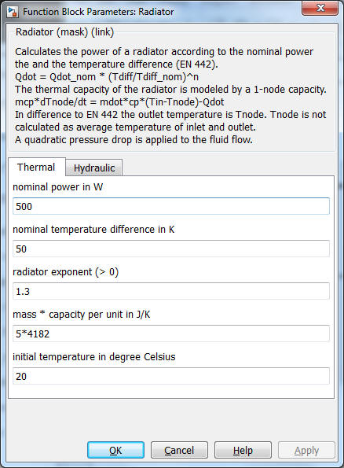

radiator
radiator Path: CARNOT/Sourc/Heat_Exchanger
radiator
Path: CARNOT/Sourc/Heat_Exchanger
Purpose
This block models the
radiators of a house heating system.
In the simple_house it may also be used as a
floor heating system.
Description
The radiator models
the time delay of the Troom temperature and the temperature of the heating
cycle.
It calculates the power of a
radiator according to the nominal power the and the temperature difference (EN
442).
The temperature of the radiator is derived by an energy-balance (EN 442 equation):
Qdot = Qdot_nom * (Tdiff/Tdiff_nom)^expo
with the temperature difference
Tdiff = Tnode - Troom
and the nominal difference
Tdiff_nom = Tnode(at test) - Troom(at test)
The thermal capacity of the radiator is modeled by a 1-node capacity:
m*c*dTnode/dt = mdot*cp*(Tin-Tnode)-Qdot
The coefficients are:
In difference to EN 442 the outlet temperature is Tnode. Tnode is not calculated
as average temperature of inlet and outlet. A quadratic pressure drop is applied
to the fluid flow.
Parameters and Dialog Box

Characteristics
Direct Feedthrough No
Sample
time
Inherited
from driving block
Vectorized
No